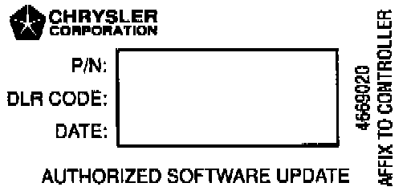
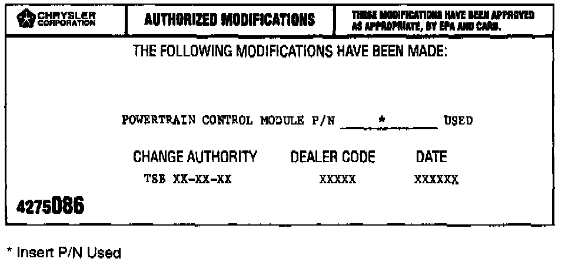

Flash Programming (1996 Models)
NOTE:THE MDS AND DRB III ARE REQUIRED TO PERFORM THIS UPDATE. THE SYSTEM MUST BE OPERATING WITH RELEASE 21 OR HIGHER AND TIL CD RELEASE 1146 OR HIGHER MUST BE INSTALLED.
1. Connect the MDS (Mopar Diagnostic System) and DRB III (Scan Tool) to the vehicle and power them up.
2. Use the arrow keys and select # 2 MDS DIAGNOSTICS on the DRB III MAIN MENU Screen.
3. Use the arrow keys and select DIAGNOSTIC MENU on the MDS, then press NEXT MENU.
4. Use the arrow keys and select VEHICLE CONTROLLER PROGRAMMING on the MDS, then press NEXT MENU.
5. Use the arrow keys and select PROGRAMMING OF ALL OTHER CONTROLLERS USING MDS & DRB III on the MDS, then press NEXT MENU.
6. Follow the steps presented on the MDS and DRB III which will allow the DRB III to obtain the current part number of the PCM.
7. The MDS will display the part number of the PCM on the vehicle and the appropriate replacement part number, then press NEXT MENU to begin programming.
If the PCM on the vehicle has already been updated or programmed, a NO UPDATES AVAILABLE message will be displayed. Check the part number of the PCM on the vehicle and compare it to the part number displayed. If the PCM has already been updated, then another condition exists that will require further diagnosis and repair.
8. The MDS and DRB III will prompt for any operator action needed during the remainder of the programming process.
NOTE:
THE FOLLOWING STEPS ARE REQUIRED BY LAW.

9. Type the necessary information on the "Authorized Software Update Label" p/n 04669020. Attach the label to the PCM and cover the label with the clear plastic overlay.

10. Type the necessary information on the "Authorized Modification Label" p/n 04275086 and attach the label near the VECI Label.